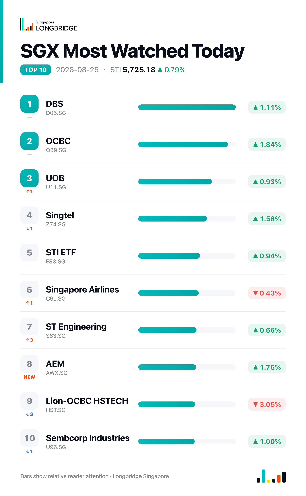

STI Climbs 0.79% to 5,725.18 on Broad Advance; Seatrium Leads Gains, Jardine C&C Bucks the Trend
The Straits Times Index closed at 5,725.18 on Tuesday, up 44.72 points, or 0.79%, after dipping to an early low of 5,674.23 — briefly below Monday's 5,680.46 close — before climbing through the session to a high of 5,729.08 and finishing just 3.90 points shy of that peak. Breadth was broad: 17 of the benchmark's 30 constituents advanced against 9 decliners and 4 unchanged, a marked shift from Monday's even 15-15 split.
Tuesday's advance was spread across sectors rather than concentrated in a handful of heavyweights. All three local banks rose in tandem — OCBC (+1.84%), DBS (+1.11%) and UOB (+0.93%) — alongside a 3.35% gain in shipbuilder Seatrium, property counters City Developments (+1.20%) and UOL (+0.42%), and industrials Yangzijiang Shipbuilding (+1.48%) and ST Engineering (+0.66%). The roughly 2-to-1 advance-to-decline ratio stood in contrast to Monday's session, when an identical number of gainers and decliners still produced a net loss for the index.
Session Movers
Seatrium (5E2.SG, +3.35%) was the session's best performer, rebounding from Monday's 2.79% pullback with no fresh company disclosure behind the move. The counter continues to work through a run of earnings-season catalysts: an Aug. 4 results-briefing transcript detailing 5% revenue growth to S$5.6 billion, net leverage of 0.5 times and a S$32 billion pipeline of prospective LNG-related work alongside confirmed P-80 and P-82 vessel sailaways for the second half, and an Aug. 5 split among analysts — UOB Kay Hian downgraded to Hold on limited revenue visibility beyond a year, while DBS and CGS International kept Buy/Add ratings, citing a growing order pipeline and the company's resumption of share buybacks. Shares trade at 0.964 times book, cheaper than about 95% of the past year, with a consensus Buy rating and a S$2.51 target implying roughly 16% upside.
Jardine Cycle & Carriage (C07.SG, -1.55%) was the index's weakest constituent, as the market continued to digest its Aug. 21 conditional agreement to sell its Singapore and Malaysia automotive distribution businesses to Indonesia's Chandra Asri Pacific for roughly S$265 million, a deal expected to generate a US$221 million gain and let the group concentrate on its core Indonesia and Vietnam markets while paring corporate debt. Chandra Asri's Aug. 24 investor briefing set out plans to fold the acquired platforms into a new 'mobility' pillar alongside its energy, chemicals and infrastructure businesses, with a capped earn-out attached to the deal. Shares trade at 8.57 times earnings, cheaper than about 60% of the past five years, with a consensus Hold rating and a S$28.22 target implying roughly 3.6% upside.
OCBC (O39.SG, +1.84%) led the three local banks higher after UOB Kay Hian reiterated a Buy rating and a S$32.50 price target on Tuesday; the analyst consensus on the stock stands at Strong Buy with an average target of S$32.30. The move came alongside gains in DBS (+1.11%) and UOB (+0.93%), a rare instance this month of the three lenders advancing together rather than splitting, following Aug. 20's pricing of £1 billion in floating-rate covered bonds due 2029 and last week's disclosure that audit committee chair Chua Kim Chiu will step down as an independent director on Sept. 19.
Singtel (Z74.SG, +1.58%) advanced alongside the broader market on a session with no single clear-cut catalyst; the most notable company-linked item was mixed, as an Opensignal report published Tuesday found rival StarHub topping Singapore's fixed broadband market on reliability, upload speed and video experience in the second quarter, while Singtel recorded the fastest average download speed at 248 Mbps. That lands alongside an Aug. 20 analyst note arguing that intensifying telco price competition is squeezing earnings at both operators and strengthening the case for a StarHub-M1 merger, a consolidation narrative running alongside Singtel's own Aug. 19 credit-rating upgrade to A+ by S&P on asset monetisation and balance-sheet strength.

One point worth noting
Tuesday's broad 17-9-4 breadth split concealed a sector-level divergence: among the index's seven REIT-linked constituents, only CapitaLand Ascendas REIT (+0.41%) advanced, three declined — Mapletree Logistics Trust (-0.85%), Mapletree Pan Asia Commercial Trust (-0.78%) and CapitaLand Integrated Commercial Trust (-0.41%) — and three closed unchanged. That is a far weaker showing than the broader market's roughly 2-to-1 advance-to-decline ratio, suggesting the rate-sensitive REIT sleeve sat out a rally that lifted banks, shipbuilders and property developers alike.
This recap is for informational purposes only and does not constitute investment advice.